8 GARCHモデル
8.1 収益率データとARCH効果
みずほFG (8411) の日次データを使って, ボラティリティ・クラスタリング (volatility clustering) 現象を確認する.
## Loading required package: xts## Loading required package: zoo##
## Attaching package: 'zoo'## The following objects are masked from 'package:base':
##
## as.Date, as.Date.numeric## Loading required package: TTR## Registered S3 method overwritten by 'quantmod':
## method from
## as.zoo.data.frame zoo## [1] "8411.T"- 日次収益率の計算 (2020年4月1日–2024年3月31日)
- 時系列プロット
mizuho_close <- Ad(`8411.T`) # 2003/3/12--
mizuho_ret <- diff(log(mizuho_close)) # Adjusted price
x <- mizuho_ret["2020-04-01/2024-03-31"]
tlen = nrow(x)
plot(x)# 日次収益率の自己相関
par(mfrow = c(1,3))
acf(x, main = "return", xlab = "h", na.action = na.pass)
# 日次収益率2乗の自己相関
acf(x ^ 2, main = "return^2", xlab = "h", na.action = na.pass)
# 日次絶対収益率の自己相関
acf(abs(x), main = "abs(return)", xlab = "h", na.action = na.pass)収益率系列は自己相関が小さくおおむね 白色ノイズの性質を示している一方, 2乗収益率や絶対収益率は, 非ゼロの 自己相関を持った時系列であることが分かる.
ボラティリティには持続性, すなわち, 一旦市場のボラティリティが多くなると 暫くそのような状態が続き, 反対に, ボラティリティが 低下すると暫くそれが続く性質のあることが, 経験的に知られている.
所与の収益率系列データに対して, このようなボラティリティ・クラスタリング現象は, 2乗収益率の自己相関構造 (「ARCH効果」) の有無を調べることで定量的に評価することができる.
そして, 金融市場における収益率系列において一般的に観察されるボラティリティ・クラスタリング現象を記述する時系列モデルのクラスとしてEngle (82) によって提案されたのが「ARCHモデル」である.
ARCHは, Autoregressive Conditional Heteroskedasticity (自己回帰条件付不均一分散性) の略であり, ARCHモデルを提案したRobert Engleは その功績に対して2003年にノーベル経済学賞を受賞した.
Tsayの作成したパッケージMTS内に,
ARCH効果を検定する関数archTest()が
また, FTSには, ArchTest()が
用意されている.
ARCH/GARCHモデルに関するパッケージは たくさんあるので, どのパッケージのどの関数を 使用しているのか注意を払う必要がある.
- Rコーディング上のヒント: 異なるパッケージが同一の名前を持つ関数を持っている
ことがあり, それが原因で, コード作成者が意図した
R関数とは異なる別の関数が呼び出され,
エラーとなってしまうことがある.
これを未然に防ぐためには,
「パッケージ名::関数名」(例,
fGarch::volatility()) のシンタックスによってRにどのパッケージ内のR関数かを明示的に指示すると良い.
# 例. ラグ$p=5$を指定した場合
# パッケージ**MTS**使用
library(MTS) # archTest()
archTest(as.numeric(na.omit(x) - mean(x, na.rm = T)), lag = 5) # MTS内## Q(m) of squared series(LM test):
## Test statistic: 72.23488 p-value: 3.508305e-14
## Rank-based Test:
## Test statistic: 29.86461 p-value: 1.568167e-05注) archTest()は, NAを受け付けない. また, 数値ベクトル化して与える必要
##
## Attaching package: 'FinTS'## The following object is masked from 'package:MTS':
##
## apca##
## ARCH LM-test; Null hypothesis: no ARCH effects
##
## data: x
## Chi-squared = 53.339, df = 5, p-value = 2.866e-108.2 ARCH/GARCHモデル
GARCH（Generalized ARCH）モデルは, Bollerslev (86) によって提案されたARCH(\(p\)) モデルを一般化した モデルクラスである. ボラティリティ方程式の右辺に\(u_t\)のラグ項 (ARCH項) しか持たないARCH(\(p\)) に対して, \(\sigma_t^2\)のラグ項 (GARCH項) を導入することで, 記述力を持ちながら, パラメータ数の少ない (倹約的な) モデルを実現できる.
実践上は, \(p=1,q=1\)がごく一般的であり, 時々, \(p=2\) や \(q=2\) が取られる程度である.
GARCH(p,q)モデル
ボラティリティ方程式 \[ \sigma_t^2=\omega+\alpha_1 u_{t-1}^2+\cdots+\alpha_p u_{t-p}^2+\beta_1 \sigma_{t-1}^2+\cdots+\beta_q \sigma_{t-q}^2\]
- 上式内で, 係数\(\alpha_i\)が掛かっている項をARCH項, 係数\(\beta_j\)が掛かっている項をGARCH項と呼ぶ.
- 文献では, ARCH項の次数は\(q\), GARCH項の次数は\(p\)が 使われることもあり, その時には, GARCHモデルはGARCH(\(q,p\)), GARCH項を持たない (純粋な) ARCHモデルはARCH(\(q\))と表記される.
GARCHモデリング
GARCH（Generalized ARCH）モデルの標準的な構築手順は以下の通りである.
1. 平均収益率のモデル化 & ARCH効果の有無の確認
前処理・探索的分析
- 資産価格データを収益率系列に変換する
- 収益率\(r_t\)の時系列プロットより, 平均的傾向に時間変動や特定のパターンがあるかを確認する
- 時系列プロットの目視により, ボラティリティの時間変化 (不均一分散性) やクラスタリング等のパターンの有無を確認する
平均収益率のモデリング
- 平均収益率のモデルとしてARMAモデル, あるいはその他のモデルを特定し (暫定的に) 適合する (例えば, Tsayにて解説されている”Two-Pass推定法” (p.210): ARCH効果を無視して平均収益率のモデルを推定)
ARCH効果の検定
- 得られた (暫定的な) 残差\(\tilde{u}_t=r_t - \hat{\mu}_t\)に対して, ARCH効果の検定 (Lagrange Multiplier検定) を行い有無を確認
- → ARCH(\(p\))モデルを採用する場合, PACFにより適切なラグ次数\(p\)を同定
- ARCH効果が確認されれば, GARCHモデルの構築 (ステップ2) へと進む
2. ボラティリティ・モデルの特定 (仕様の設定, スペシフィケーション)
分散方程式 (条件付分散\(\sigma_t^2\)のモデル構造) を特定する
- GARCH(\(p,q\))構造の特定
- デフォルトは, GARCH(\(1,1\)). 必要に応じて, GARCH(\(2,1\))やGARCH(\(1,2\))も検討
- 標準化誤差項\(\epsilon_t\)の従う分布の特定
- デフォルトは, 標準正規分布\(N(0,1)\)
- 必要に応じたバリエーションの検討. 非対称性, レバレッジ効果, 長期記憶性が見られる場合, EGARCH, GJR-GARCH, FIGARCHなどのファミリーを検討
3. モデル適合とモデル選択
ステップ2で特定したモデルを収益率データに適合させる. 複数の候補モデルがあれば, その中で最良のモデルを選択する
最尤推定（MLE）によりパラメータ(例, GARCH(1,1)の場合, \((\omega,\alpha_1, \beta_1)\))を推定する
標準的には, ボラティリティ方程式のパラメータだけでなく, 平均方程式のパラメータも同時に推定する (R関数の引数として指定)
複数の候補モデルがあれば, その中から最良のGARCHモデルを選択する
- 情報量基準 (AICc, BIC等)
- 尤度比検定: 入れ子構造を持つモデルを比較し、追加パラメータがモデル適合性を改善するかを確認
- ※ ここで一つに絞り込まずにボラティリティ予測の精度比較で選択することも可 (ステップ5)
4. モデル診断
適合モデルの (標準化済) 残差系列\(\{\tilde{\epsilon}_t=\frac{\tilde{u}_t}{\hat{\sigma}_t}\}\)を用いて, モデル診断を行う
- 残差系列に自己相関 (系列従属性) が残っていないか
- \(\{\tilde{\epsilon}_t\}\)の自己相関の有無 (残差プロット, ACF/PACFのコレログラム, Ljung-Box検定等)
- \(\{\tilde{\epsilon}_t^2\}\)の自己相関の有無 (残差プロット, ACF/PACFのコレログラム, Ljung-Box検定等)
- 残差\(\epsilon_t\)に関する分布の仮定が適切だったか
- \(\{\tilde{\epsilon}_t\}\)の正規性 (Q-Qプロット, Jarque-Bera検定, Shapiro-Wilk検定, Kolmogorov-Smirnov検定等)
- → 残差に有意な自己相関が残る場合には, モデルの改良を試みる (ステップ2へ戻る)
- GARCH(\(p,q\))の次数を上げる(\(p,q\le2\))
- \(\epsilon_t\)の分布の仮定を変更する
- 別のGARCHファミリーを試みる
- 外生変数の導入も検討する
8.3 ARCH/GARCHモデルのシミュレーション
パッケージfGarchの利用
参考: https://www.rdocumentation.org/packages/fGarch/versions/3042.83.2/topics/garchSim
ボラティリティ方程式 \[ \sigma_t^2=\omega+\alpha_1 u_{t-1}^2+\cdots+\alpha_p u_{t-p}^2+\beta_1 \sigma_{t-1}^2+\cdots+\beta_q \sigma_{t-q}^2\]
garchSpec()
- model: 以下のパラメータをリスト要素して指定:
- omega: (分散方程式の) 定数項 (alpha0) (デフォルトは1e-6)
- alpha: (同) ARCH項ベクトル (デフォルトは0.1, 次数p=1)
- beta: GARCH項ベクトル (デフォルトは0,8, q=1)
- cond.dist: "norm", "ged", "std", "snorm", "sged", (デフォルトは"norm")ARCH(p)モデル
- パラメータ設定例
- ボラティリティ方程式 (\(p=2, q=0\)): \(\omega=10^{-6}\) (デフォルト), \(\alpha_1=0.5, \alpha_2=0.1\)
## NOTE: Packages 'fBasics', 'timeDate', and 'timeSeries' are no longer
## attached to the search() path when 'fGarch' is attached.
##
## If needed attach them yourself in your R script by e.g.,
## require("timeSeries")##
## Attaching package: 'fGarch'## The following object is masked from 'package:TTR':
##
## volatility# ARCH(2) - use default omega and specify alpha, set beta=0!
spec <- garchSpec(model = list(alpha = c(0.5, 0.1), beta = 0))
set.seed(seedv)
x <- garchSim(spec, n = tlen)
plot(x)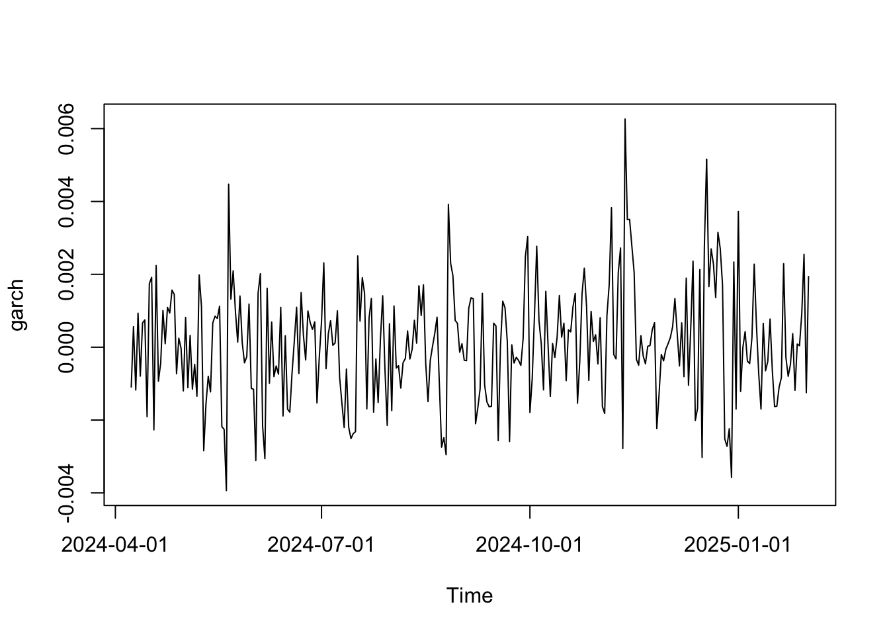


GARCH(p,q)モデル
- パラメータ設定例
- ボラティリティ方程式 (次数\(p=2,q=1\)): \(\omega=10^{-6}\)(デフォルト), \(\alpha_1=0.5, \alpha_2=0.1, \beta_1=0.35\)
spec <- garchSpec(model = list(alpha = c(0.5, 0.1), beta = 0.35))
set.seed(seedv)
x <- garchSim(spec, n = tlen)
plot(x)


ARMA(p’,q’)-GARCH(p,q)モデル
- パラメータ設定例
- 平均方程式 (\(p'=1,q'=2\)): \(\phi_1=0.7,\theta_1=0.3,\theta_2=-0.3\)
- ボラティリティ方程式 (\(p=1,q=1\)): \(\omega=10^{-6}\)(デフォルト), \(\alpha_1=0.5, \alpha_2=0.1, \beta_1=0.35\)
spec <- garchSpec(model = list(ar = 0.7, ma = c(0.3, -0.3),
alpha = c(0.5, 0.1), beta = 0.35))
set.seed(seedv)
x <- garchSim(spec, n = tlen)
plot(x)


8.4 ARCH/GARCHモデルの適合
先に作成したみずほFG (8411) の日次収益率データセットを使い, ARCH/GARCHモデリングを行う.
- garchFit関数: 1変量ARMA-GARCHモデルを適合
- 最尤法
- ARMAおよびGARCHのモデル次数を引数に与える (デフォルト, GARCH(1,1))
モデルがうまくデータに適合していれば, 得られる (標準済) 残差系列は, おおよそ i.i.dの (正規分布に) 近い挙動をすることが期待される. この性質を使うことでモデルの診断を行うことができる.
ARCH効果の検定 ここでは, パッケージFinTSに含まれる関数
ArchTest()を使用する.- 例. ラグ\(p=5\)を指定した場合
# パッケージ**MTS**使用
# library(MTS) # archTest()
# archTest(as.numeric(na.omit(x)), lag = 5) # MTS内
# パッケージ**FinTS**使用
library("FinTS") # ArchTest()
ArchTest(x, lags = 5, demean = TRUE) # FinTS内##
## ARCH LM-test; Null hypothesis: no ARCH effects
##
## data: x
## Chi-squared = 164.89, df = 5, p-value < 2.2e-16→ 帰無仮説 (\(\alpha_1= \ldots=\alpha_{5}=0\)) を棄却
- 例. ARCH(5)モデルの適合
fit_ARCH <- garchFit(formula = ~ garch(5, 0), data = x,
trace = FALSE, include.mean = TRUE) # fGarch## Warning in sqrt(diag(fit$cvar)): NaNs produced##
## Title:
## GARCH Modelling
##
## Call:
## garchFit(formula = ~garch(5, 0), data = x, include.mean = TRUE,
## trace = FALSE)
##
## Mean and Variance Equation:
## data ~ garch(5, 0)
## <environment: 0x7fda7d12d788>
## [data = x]
##
## Conditional Distribution:
## norm
##
## Coefficient(s):
## mu omega alpha1 alpha2 alpha3 alpha4
## 6.6138e-04 4.4052e-06 5.6620e-01 1.7058e-01 1.0000e-08 1.3281e-01
## alpha5
## 1.0000e-08
##
## Std. Errors:
## based on Hessian
##
## Error Analysis:
## Estimate Std. Error t value Pr(>|t|)
## mu 6.614e-04 2.660e-04 2.487 0.0129 *
## omega 4.405e-06 1.106e-06 3.982 6.83e-05 ***
## alpha1 5.662e-01 1.098e-01 5.159 2.48e-07 ***
## alpha2 1.706e-01 7.584e-02 2.249 0.0245 *
## alpha3 1.000e-08 5.446e-02 0.000 1.0000
## alpha4 1.328e-01 6.695e-02 1.984 0.0473 *
## alpha5 1.000e-08 NaN NaN NaN
## ---
## Signif. codes: 0 '***' 0.001 '**' 0.01 '*' 0.05 '.' 0.1 ' ' 1
##
## Log Likelihood:
## 1223.356 normalized: 4.077854
##
## Description:
## Sun Feb 2 15:36:10 2025 by user:
##
##
## Standardised Residuals Tests:
## Statistic p-Value
## Jarque-Bera Test R Chi^2 18.4174411 0.0001001621
## Shapiro-Wilk Test R W 0.9886304 0.0189144275
## Ljung-Box Test R Q(10) 149.7077699 0.0000000000
## Ljung-Box Test R Q(15) 156.9174141 0.0000000000
## Ljung-Box Test R Q(20) 158.0863034 0.0000000000
## Ljung-Box Test R^2 Q(10) 11.2902884 0.3353536452
## Ljung-Box Test R^2 Q(15) 12.9595175 0.6054248986
## Ljung-Box Test R^2 Q(20) 18.3437965 0.5647719502
## LM Arch Test R TR^2 12.1603947 0.4328856806
##
## Information Criterion Statistics:
## AIC BIC SIC HQIC
## -8.109042 -8.022621 -8.110098 -8.074456
残差系列の2乗の偏自己相関を見ることで,
残差系列resdにARCH効果が残っているかを確かめることができる.
(すなわち, AR(\(p\))モデルの偏自己相関は,
ラグ\(p\)にて切断が起こるという性質を利用する)
## Please install package 'goftest' for additional tests- 例. GARCH(1,1)モデルの適合
fit_GARCH <- garchFit(formula = ~ garch(1, 1), data = x,
trace = FALSE, include.mean = TRUE) # fGarch
summary(fit_GARCH)##
## Title:
## GARCH Modelling
##
## Call:
## garchFit(formula = ~garch(1, 1), data = x, include.mean = TRUE,
## trace = FALSE)
##
## Mean and Variance Equation:
## data ~ garch(1, 1)
## <environment: 0x7fda675bbd28>
## [data = x]
##
## Conditional Distribution:
## norm
##
## Coefficient(s):
## mu omega alpha1 beta1
## 5.5059e-04 4.2320e-06 6.0121e-01 2.5190e-01
##
## Std. Errors:
## based on Hessian
##
## Error Analysis:
## Estimate Std. Error t value Pr(>|t|)
## mu 5.506e-04 2.895e-04 1.902 0.057218 .
## omega 4.232e-06 1.222e-06 3.462 0.000536 ***
## alpha1 6.012e-01 1.083e-01 5.550 2.86e-08 ***
## beta1 2.519e-01 8.526e-02 2.954 0.003132 **
## ---
## Signif. codes: 0 '***' 0.001 '**' 0.01 '*' 0.05 '.' 0.1 ' ' 1
##
## Log Likelihood:
## 1223.751 normalized: 4.079169
##
## Description:
## Sun Feb 2 15:36:10 2025 by user:
##
##
## Standardised Residuals Tests:
## Statistic p-Value
## Jarque-Bera Test R Chi^2 54.1300902 1.761147e-12
## Shapiro-Wilk Test R W 0.9814896 6.392272e-04
## Ljung-Box Test R Q(10) 144.3970498 0.000000e+00
## Ljung-Box Test R Q(15) 152.2310820 0.000000e+00
## Ljung-Box Test R Q(20) 153.8042641 0.000000e+00
## Ljung-Box Test R^2 Q(10) 7.7493638 6.533037e-01
## Ljung-Box Test R^2 Q(15) 9.6087572 8.436022e-01
## Ljung-Box Test R^2 Q(20) 13.0794732 8.739482e-01
## LM Arch Test R TR^2 8.2115410 7.683883e-01
##
## Information Criterion Statistics:
## AIC BIC SIC HQIC
## -8.131670 -8.082287 -8.132020 -8.111907## mu omega alpha1 beta1
## 5.505948e-04 4.231971e-06 6.012138e-01 2.518998e-01## [1] -0.86077681 -0.97468295 -0.41946506 -0.84915092 -0.78191126 -0.39765003
## [7] 0.06257979 1.46594118 0.36737687 0.79955945
## Please install package 'goftest' for additional tests- → ARCHより若干改善? 非正規性残る → 更なる改善の余地有り
- Tsay, Ch.4を参照のこと
- ボラティリティ推定値 (内挿予測)
## [1] 0.002761729 0.003090444 0.003477479 0.002925302 0.003177623 0.003238359
## [7] 0.002805460 0.002496619 0.003722264 0.002974284
- \(l\)期先予測 (外挿予測)
# n.ahead(=20)期先予測
# nx:表示する観測データ数
# 収益率系列xの予測 (& 95%信頼区間)
x_pred <- predict(fit_GARCH, n.ahead = 20, plot = TRUE, conf = .95, nx = 300)
## [1] 0.003140143 0.003555854 0.003875412 0.004128527 0.004332789 0.004499725
## [7] 0.004637393 0.004751687 0.004847063 0.004926971 0.004994130 0.005050719
## [13] 0.005098500 0.005138911 0.005173136 0.005202157 0.005226787 0.005247708
## [19] 0.005265490 0.005280613# プロット (実績値&予測値)
v_pred <- c(vola[(tlen - 99):tlen], v_pred) #; length(v_pred)
plot(v_pred, type = "l", ylab = "vola"); abline(v = 101, col = "orange", lty = "dotted")
- GARCH(1,1)モデルの\(l\)-期先ボラティリティ予測値
- \(T\): データ期間 (モデル推定に使用) の最終時点 (予測の起点)
- \(u_T, \sigma_T^2\): モデル適合による時点\(T\)における推定値 (所与)
- \(l=1\)のケース: \[\sigma_T^2 (1) = \omega + \alpha_1 u_T^2 + \beta_1 \sigma_T^2\]
- \(l\ge2\)のケース: \[\sigma_T^2 (l) = \omega \frac{1-(\alpha_1 + \beta_1)^{l-1}}{1-(\alpha_1 + \beta_1)} + (\alpha_1 + \beta_1)^{l-1} \sigma_T^2 (1)\]
- 参考: Tsay, pp.200-201
次に, みずほFGのデータセットに対して, 代替パッケージrugarchを使用した GARCHモデルの適合, および予測の例を示す. rugarchの使い方については, この後で紹介する.
## Loading required package: parallel##
## Attaching package: 'rugarch'## The following object is masked from 'package:stats':
##
## sigma# モデルの特定: GARCH(1,1)を指定
spec <- ugarchspec(variance.model = list(garchOrder = c(1, 1)))
# モデルの適合
fit_GARCH <- ugarchfit(data = x, spec = spec)
# 収益率系列, ボラティリティの予測 (→ x_predに2系列を格納)
(x_pred <- ugarchforecast(fitORspec = fit_GARCH, n.ahead = 20))##
## *------------------------------------*
## * GARCH Model Forecast *
## *------------------------------------*
## Model: sGARCH
## Horizon: 20
## Roll Steps: 0
## Out of Sample: 0
##
## 0-roll forecast [T0=2025-02-01]:
## Series Sigma
## T+1 3.651e-03 0.003180
## T+2 1.854e-03 0.003277
## T+3 9.630e-04 0.003367
## T+4 5.210e-04 0.003453
## T+5 3.018e-04 0.003533
## T+6 1.931e-04 0.003609
## T+7 1.392e-04 0.003682
## T+8 1.125e-04 0.003750
## T+9 9.922e-05 0.003815
## T+10 9.264e-05 0.003877
## T+11 8.938e-05 0.003937
## T+12 8.776e-05 0.003993
## T+13 8.696e-05 0.004047
## T+14 8.656e-05 0.004098
## T+15 8.636e-05 0.004147
## T+16 8.626e-05 0.004194
## T+17 8.622e-05 0.004239
## T+18 8.619e-05 0.004282
## T+19 8.618e-05 0.004323
## T+20 8.617e-05 0.004363# 別々に表示
# 収益率系列の予測値
# fitted(x_pred)
# x_pred@forecast$seriesFor # 同
# ボラティリティ(条件付標準偏差)の予測値
sigma(x_pred) ## 2025-02-01
## T+1 0.003180478
## T+2 0.003276718
## T+3 0.003367218
## T+4 0.003452526
## T+5 0.003533106
## T+6 0.003609360
## T+7 0.003681637
## T+8 0.003750244
## T+9 0.003815451
## T+10 0.003877500
## T+11 0.003936604
## T+12 0.003992959
## T+13 0.004046739
## T+14 0.004098102
## T+15 0.004147194
## T+16 0.004194146
## T+17 0.004239080
## T+18 0.004282108
## T+19 0.004323332
## T+20 0.004362848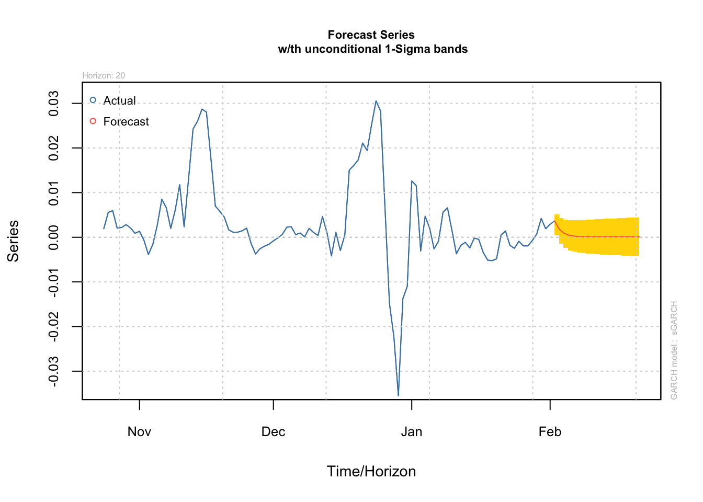
注) rugarch::rugarchforecast()の出力x_predに対するプロットと, 先のfGarch::predict()の出力x_predとは異なる.
パッケージrugarchの利用
- ugarchspec(): 一変量GARCHモデルの特定 (specification)
- modelの選択肢: “sGARCH”, “fGARCH”, “eGARCH”, “gjrGARCH”, “apARCH”, “iGARCH”, “csGARCH”
- submodelの選択肢(model=“fGARCH”の場合): “GARCH”, “TGARCH”, “AVGARCH”, “NGARCH”, “NAGARCH”, “APARCH”, “GJRGARCH”, “ALL- GARCH”.
- distribution.mpdel(イノベーションに用いる条件付確率密度)の選択肢: "norm", "snorm"(skew-normal), "std"(student t), "sstd"(skew-student), "ged"(generalized error), "sged"(skew-ged), "nig"(normal inverse gaussian), "ghyp"(Generalized Hyperbolic), "jsu"(Johnson's SU).
- ugarchfit(): 一変量GARCHモデルの適合
- solverの選択肢: “nlminb”, “solnp”, “lbfgs”, “gosolnp”, “nloptr” or “hybrid”
- 注): 本パッケージでは, "NAGARCH (Nonlinear Asymmetric GARCH)", "NGARCH (Nonlinear GARCH)"である. Tsay, 4.12で紹介されているEngle and Ng (1993)の"NGARCH (Nonsymmetric GARCH)"は, 前者に対応する. https://www.rdocumentation.org/packages/rugarch/versions/1.4-4
データセット: spyreal
- SPDR Standard and Poors 500 Open-Close Daily Return and Realized Kernel Volatility
- SPDR(スパイダー) S\&P500インデックス: 始値-終値(open-close)収益率, 実現カーネル(realized kernel)ボラティリティ.
- 期間: 2002-01-02 〜 2008-08-29
- Reference: Hansen, P. R., Huang, Z., and Shek, H. H. (2012). Realized GARCH: a joint model for returns and realized measures of volatility. Journal of Applied Econometrics, 27(6), 877–906.## Loading required package: parallel##
## Attaching package: 'rugarch'## The following object is masked from 'package:stats':
##
## sigma## SPY_OC SPY_RK
## 2002-01-02 0.0051151007 0.010044750
## 2002-01-03 0.0101514981 0.005342828
## 2002-01-04 0.0009369278 0.007978535
## 2002-01-07 -0.0097245499 0.005772834
## 2002-01-08 -0.0033463500 0.006452759
## 2002-01-09 -0.0078317023 0.007684824IARCH(1,1)
spec1 <- ugarchspec(
variance.model = list(model = "iGARCH", garchOrder = c(1, 1)),
mean.model = list(armaOrder = c(0, 0), include.mean = TRUE),
distribution.model = "norm", fixed.pars = list(omega = 0))
# 平均方程式にARMA(1,1)の場合: mean.model=list(armaOrder = c(1, 1)
mod_igarch <- ugarchfit(spec = spec1, data = spyreal[, 1], solver = 'hybrid')
mod_igarch##
## *---------------------------------*
## * GARCH Model Fit *
## *---------------------------------*
##
## Conditional Variance Dynamics
## -----------------------------------
## GARCH Model : iGARCH(1,1)
## Mean Model : ARFIMA(0,0,0)
## Distribution : norm
##
## Optimal Parameters
## ------------------------------------
## Estimate Std. Error t value Pr(>|t|)
## mu -0.000028 0.000177 -0.15908 0.8736
## omega 0.000000 NA NA NA
## alpha1 0.043186 0.006677 6.46763 0.0000
## beta1 0.956814 NA NA NA
##
## Robust Standard Errors:
## Estimate Std. Error t value Pr(>|t|)
## mu -0.000028 0.000212 -0.13345 0.893837
## omega 0.000000 NA NA NA
## alpha1 0.043186 0.010296 4.19426 0.000027
## beta1 0.956814 NA NA NA
##
## LogLikelihood : 5630.331
##
## Information Criteria
## ------------------------------------
##
## Akaike -6.7730
## Bayes -6.7664
## Shibata -6.7730
## Hannan-Quinn -6.7705
##
## Weighted Ljung-Box Test on Standardized Residuals
## ------------------------------------
## statistic p-value
## Lag[1] 5.478 0.019252
## Lag[2*(p+q)+(p+q)-1][2] 8.207 0.005702
## Lag[4*(p+q)+(p+q)-1][5] 10.148 0.008436
## d.o.f=0
## H0 : No serial correlation
##
## Weighted Ljung-Box Test on Standardized Squared Residuals
## ------------------------------------
## statistic p-value
## Lag[1] 0.07751 0.7807
## Lag[2*(p+q)+(p+q)-1][5] 0.87182 0.8880
## Lag[4*(p+q)+(p+q)-1][9] 1.85043 0.9221
## d.o.f=2
##
## Weighted ARCH LM Tests
## ------------------------------------
## Statistic Shape Scale P-Value
## ARCH Lag[3] 0.9841 0.500 2.000 0.3212
## ARCH Lag[5] 1.3879 1.440 1.667 0.6223
## ARCH Lag[7] 2.0139 2.315 1.543 0.7144
##
## Nyblom stability test
## ------------------------------------
## Joint Statistic: 0.1404
## Individual Statistics:
## mu 0.02297
## alpha1 0.08852
##
## Asymptotic Critical Values (10% 5% 1%)
## Joint Statistic: 0.61 0.749 1.07
## Individual Statistic: 0.35 0.47 0.75
##
## Sign Bias Test
## ------------------------------------
## t-value prob sig
## Sign Bias 1.24939 0.2117
## Negative Sign Bias 0.07504 0.9402
## Positive Sign Bias 0.78467 0.4328
## Joint Effect 5.84998 0.1191
##
##
## Adjusted Pearson Goodness-of-Fit Test:
## ------------------------------------
## group statistic p-value(g-1)
## 1 20 40.09 0.0031807
## 2 30 58.61 0.0009158
## 3 40 63.78 0.0073916
## 4 50 83.13 0.0016808
##
##
## Elapsed time : 0.04465389GJR-GARCH(1,1)
spec2 <- ugarchspec(
variance.model = list(model = "gjrGARCH", garchOrder = c(1, 1)),
mean.model = list(armaOrder = c(0, 0), include.mean = TRUE),
distribution.model = "norm")
mod_gjr <- ugarchfit(spec = spec2, data = spyreal[, 1], solver = 'hybrid')
mod_gjr##
## *---------------------------------*
## * GARCH Model Fit *
## *---------------------------------*
##
## Conditional Variance Dynamics
## -----------------------------------
## GARCH Model : gjrGARCH(1,1)
## Mean Model : ARFIMA(0,0,0)
## Distribution : norm
##
## Optimal Parameters
## ------------------------------------
## Estimate Std. Error t value Pr(>|t|)
## mu -0.000235 0.000166 -1.411053 0.15823
## omega 0.000001 0.000001 1.071143 0.28410
## alpha1 0.000002 0.001539 0.001406 0.99888
## beta1 0.946143 0.009444 100.187823 0.00000
## gamma1 0.090960 0.015266 5.958395 0.00000
##
## Robust Standard Errors:
## Estimate Std. Error t value Pr(>|t|)
## mu -0.000235 0.000398 -0.590360 0.554949
## omega 0.000001 0.000003 0.176179 0.860154
## alpha1 0.000002 0.067915 0.000032 0.999975
## beta1 0.946143 0.079995 11.827460 0.000000
## gamma1 0.090960 0.024653 3.689603 0.000225
##
## LogLikelihood : 5665.739
##
## Information Criteria
## ------------------------------------
##
## Akaike -6.8120
## Bayes -6.7957
## Shibata -6.8120
## Hannan-Quinn -6.8059
##
## Weighted Ljung-Box Test on Standardized Residuals
## ------------------------------------
## statistic p-value
## Lag[1] 5.697 0.016992
## Lag[2*(p+q)+(p+q)-1][2] 7.484 0.008868
## Lag[4*(p+q)+(p+q)-1][5] 8.806 0.018530
## d.o.f=0
## H0 : No serial correlation
##
## Weighted Ljung-Box Test on Standardized Squared Residuals
## ------------------------------------
## statistic p-value
## Lag[1] 3.883 0.04878
## Lag[2*(p+q)+(p+q)-1][5] 5.237 0.13523
## Lag[4*(p+q)+(p+q)-1][9] 6.736 0.22230
## d.o.f=2
##
## Weighted ARCH LM Tests
## ------------------------------------
## Statistic Shape Scale P-Value
## ARCH Lag[3] 0.1657 0.500 2.000 0.6840
## ARCH Lag[5] 0.4472 1.440 1.667 0.8991
## ARCH Lag[7] 1.9375 2.315 1.543 0.7306
##
## Nyblom stability test
## ------------------------------------
## Joint Statistic: 292.4044
## Individual Statistics:
## mu 0.04325
## omega 55.95654
## alpha1 0.22056
## beta1 0.17936
## gamma1 0.19937
##
## Asymptotic Critical Values (10% 5% 1%)
## Joint Statistic: 1.28 1.47 1.88
## Individual Statistic: 0.35 0.47 0.75
##
## Sign Bias Test
## ------------------------------------
## t-value prob sig
## Sign Bias 0.9606 0.3369
## Negative Sign Bias 0.8427 0.3995
## Positive Sign Bias 0.6544 0.5130
## Joint Effect 2.4782 0.4792
##
##
## Adjusted Pearson Goodness-of-Fit Test:
## ------------------------------------
## group statistic p-value(g-1)
## 1 20 37.13 0.007635
## 2 30 53.67 0.003532
## 3 40 68.35 0.002521
## 4 50 83.07 0.001704
##
##
## Elapsed time : 0.3069692APARCH
spec3 <- ugarchspec(
variance.model = list(model = "apARCH", garchOrder = c(1, 1)),
mean.model = list(armaOrder = c(0, 0), include.mean = TRUE),
distribution.model = "std")
# 一般誤差分布使用の場合: distribution.model="ged")
mod_aparch <- ugarchfit(spec = spec3, data = spyreal[, 1], solver = 'hybrid')
mod_aparch##
## *---------------------------------*
## * GARCH Model Fit *
## *---------------------------------*
##
## Conditional Variance Dynamics
## -----------------------------------
## GARCH Model : apARCH(1,1)
## Mean Model : ARFIMA(0,0,0)
## Distribution : std
##
## Optimal Parameters
## ------------------------------------
## Estimate Std. Error t value Pr(>|t|)
## mu -0.000125 0.000172 -0.72626 0.467678
## omega 0.000027 0.000031 0.86936 0.384649
## alpha1 0.041622 0.011955 3.48160 0.000498
## beta1 0.951146 0.008248 115.31753 0.000000
## gamma1 1.000000 0.000714 1400.04148 0.000000
## delta 1.225721 0.094589 12.95835 0.000000
## shape 15.206355 4.917006 3.09260 0.001984
##
## Robust Standard Errors:
## Estimate Std. Error t value Pr(>|t|)
## mu -0.000125 NaN NaN NaN
## omega 0.000027 NaN NaN NaN
## alpha1 0.041622 NaN NaN NaN
## beta1 0.951146 NaN NaN NaN
## gamma1 1.000000 NaN NaN NaN
## delta 1.225721 NaN NaN NaN
## shape 15.206355 NaN NaN NaN
##
## LogLikelihood : 5675.851
##
## Information Criteria
## ------------------------------------
##
## Akaike -6.8217
## Bayes -6.7989
## Shibata -6.8218
## Hannan-Quinn -6.8133
##
## Weighted Ljung-Box Test on Standardized Residuals
## ------------------------------------
## statistic p-value
## Lag[1] 5.898 0.015161
## Lag[2*(p+q)+(p+q)-1][2] 7.943 0.006698
## Lag[4*(p+q)+(p+q)-1][5] 9.442 0.012785
## d.o.f=0
## H0 : No serial correlation
##
## Weighted Ljung-Box Test on Standardized Squared Residuals
## ------------------------------------
## statistic p-value
## Lag[1] 4.404 0.03586
## Lag[2*(p+q)+(p+q)-1][5] 5.695 0.10604
## Lag[4*(p+q)+(p+q)-1][9] 7.270 0.17759
## d.o.f=2
##
## Weighted ARCH LM Tests
## ------------------------------------
## Statistic Shape Scale P-Value
## ARCH Lag[3] 0.03823 0.500 2.000 0.8450
## ARCH Lag[5] 0.17666 1.440 1.667 0.9709
## ARCH Lag[7] 1.85878 2.315 1.543 0.7472
##
## Nyblom stability test
## ------------------------------------
## Joint Statistic: NaN
## Individual Statistics:
## mu 0.06111
## omega 0.10186
## alpha1 0.19435
## beta1 0.19353
## gamma1 NaN
## delta 0.12352
## shape 0.59089
##
## Asymptotic Critical Values (10% 5% 1%)
## Joint Statistic: 1.69 1.9 2.35
## Individual Statistic: 0.35 0.47 0.75
##
## Sign Bias Test
## ------------------------------------
## t-value prob sig
## Sign Bias 0.9885 0.3230
## Negative Sign Bias 1.4529 0.1465
## Positive Sign Bias 0.8097 0.4183
## Joint Effect 3.4462 0.3278
##
##
## Adjusted Pearson Goodness-of-Fit Test:
## ------------------------------------
## group statistic p-value(g-1)
## 1 20 29.36 0.060532
## 2 30 41.10 0.067430
## 3 40 46.69 0.185786
## 4 50 82.04 0.002153
##
##
## Elapsed time : 1.366688- 係数の推定値
## mu omega alpha1 beta1 gamma1
## -1.251883e-04 2.669367e-05 4.162211e-02 9.511461e-01 1.000000e+00
## delta shape
## 1.225721e+00 1.520636e+01##
## Akaike -6.821722
## Bayes -6.798912
## Shibata -6.821758
## Hannan-Quinn -6.813268- 推定されたボラティリティ系列
- プロット
library(ggplot2)
library(xts) #library(zoo)
autoplot(dat) # 時系列プロット
# ボラティリティ推定値同士の比較
plot(as.vector(sqrt(dat$SPY_RK)), as.vector(dat$GARCH))
# plot(as.vector(dat$SPY_RK), as.vector(dat$GARCH)) - Bootstrap法に基づく予測
- GARCHモデルによるn期先予測には2種類の不確実性: 予測確率分布に起因するもの & パラメータ推定誤差に起因するもの.
- Bootstrap法: 適合GARCHモデルの経験分布よりイノベーションをリサンプルすることで, 将来の時系列(series)と標準偏差(sigma)を生成.
- “full”法(Pascual et al (2006)): パラメータのシミュレーション分布を発生させることで, パラメータ不確実性を考慮(実行時間がかかる).
- “partial”法: 分布の不確実性のみ考慮
dat_pred <- ugarchboot(mod_aparch, n.ahead = 30, method = "Partial")
# plot(dat_pred, which = "all")
# 時系列(収益率)
plot(dat_pred, which = 2)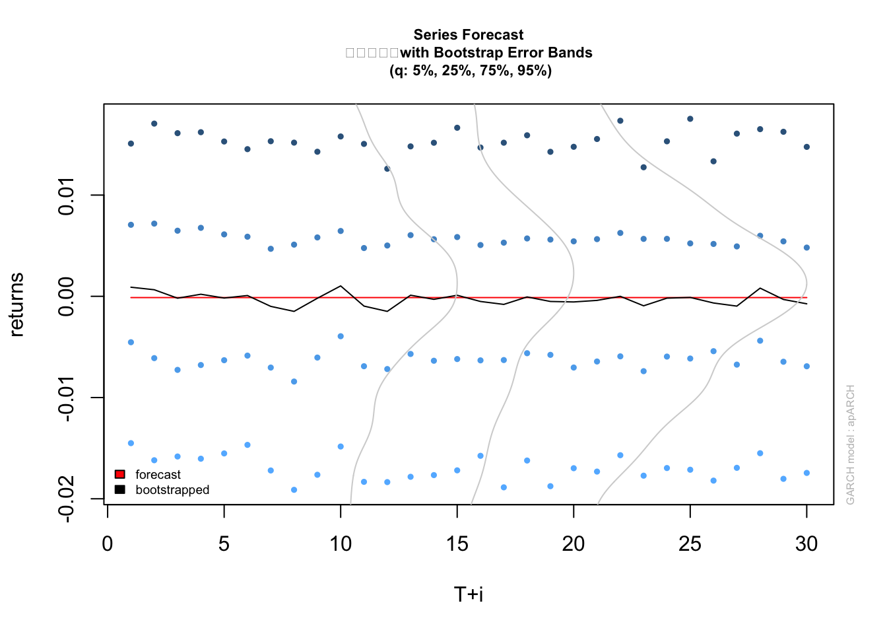

##
## *-----------------------------------*
## * GARCH Bootstrap Forecast *
## *-----------------------------------*
## Model : apARCH
## n.ahead : 30
## Bootstrap method: partial
## Date (T[0]): 2008-08-29
##
## Series (summary):
## min q.25 mean q.75 max forecast[analytic]
## t+1 -0.028889 -0.005931 -0.000029 0.006394 0.033217 -0.000125
## t+2 -0.034391 -0.006618 0.000156 0.006866 0.035030 -0.000125
## t+3 -0.028137 -0.005622 0.000498 0.006237 0.029206 -0.000125
## t+4 -0.025283 -0.007711 -0.000508 0.005629 0.033215 -0.000125
## t+5 -0.049987 -0.006300 -0.000217 0.006522 0.038031 -0.000125
## t+6 -0.035585 -0.006500 -0.000812 0.004534 0.029474 -0.000125
## t+7 -0.045162 -0.007255 -0.000800 0.005244 0.034877 -0.000125
## t+8 -0.041687 -0.006459 -0.000480 0.006009 0.031051 -0.000125
## t+9 -0.031049 -0.005176 0.000751 0.007022 0.037387 -0.000125
## t+10 -0.036920 -0.006902 -0.000327 0.006093 0.034371 -0.000125
## .....................
##
## Sigma (summary):
## min q0.25 mean q0.75 max forecast[analytic]
## t+1 0.010004 0.010004 0.010004 0.010004 0.010004 0.010004
## t+2 0.009665 0.009665 0.009975 0.010074 0.012500 0.009985
## t+3 0.009341 0.009341 0.009958 0.010281 0.014877 0.009967
## t+4 0.009030 0.009157 0.009881 0.010299 0.014338 0.009948
## t+5 0.008732 0.009093 0.009871 0.010413 0.013958 0.009930
## t+6 0.008446 0.008978 0.009873 0.010458 0.017329 0.009912
## t+7 0.008173 0.008932 0.009868 0.010448 0.017745 0.009895
## t+8 0.007910 0.008910 0.009881 0.010499 0.017089 0.009877
## t+9 0.007659 0.008795 0.009886 0.010603 0.017519 0.009860
## t+10 0.007418 0.008698 0.009839 0.010660 0.016872 0.009842
## .....................8.5 GARCHモデル: データ分析例 (Tsay, Ch4)
必要な関数やデータセットの入手
- 教科書ホームページからのRコードへの直接の読み込みの方法
# 教科書著者(Tsay)の関数
fctns <- c("igarch.r", "garchm.r", "egarch.r", "ngarch.r", "tgarch11.r", "vold2m.r")
url_home <- "https://faculty.chicagobooth.edu/-/media/faculty/ruey-s-tsay/teaching/introts/"
for (fct in fctns) {
url_tmp <- file.path(url_home, fct)
source(url_tmp)
}# データセット
# 単一テキストファイルの入手
# library(rio)
# url_tmp <- "https://faculty.chicagobooth.edu/-/media/faculty/ruey-s-tsay/teaching/introts/d-spy-0111.txt"
# rio::import(url_tmp)
# 複数データセットの入った圧縮フォルダ(*.zip)からのデータセット入手
url_tmp <- "https://faculty.chicagobooth.edu/-/media/faculty/ruey-s-tsay/teaching/introts/ch4data.zip"
tmp <- tempfile()
tmp2 <- tempfile()
download.file(url_tmp, tmp)
unzip(tmp, exdir = tmp2)
dir(tmp2, recursive = T)
## [1] "d-pg-0111.txt" "d-sp58010.txt" "d-spy-0111.txt" "d-useu9910.txt"
## [5] "m-ibmsp6709.txt" "m-intcsp7309.txt" "m-ko-6111.txt" "m-sp56710.txt"
setwd(tmp2)
unlink(tmp)Integrated GARCH モデル
- Tsay 4.7, pp.211–212
Igarch(): Estimation of a Gaussian IGARCH(1,1) model.
- Igarch(rtn, include.mean = F, volcnt = F)
- rtn: return series
- include.mean: flag for the constant in the mean equation.
- volcnt: flag for the constant term of the volatility equation.# source("Igarch.R")
#
da <- read.table("m-intcsp7309.txt", header = T)
head(da) # monthly returns of Intel & S&P, Jan73--Dec09
## date intc sp
## 1 19730131 0.010050 -0.017111
## 2 19730228 -0.139303 -0.037490
## 3 19730330 0.069364 -0.001433
## 4 19730430 0.086486 -0.040800
## 5 19730531 -0.104478 -0.018884
## 6 19730629 0.133333 -0.006575
intc <- log(da$intc + 1) # monthly log-returns of Intel# mm <- Igarch(intc, include.mean = T, volcnt = T) # --> エラー
# mm <- Igarch(intc, include.mean = T) # --> mu, beta
# mm <- Igarch(intc, volcnt = T) # --> omega, beta
mm <- Igarch(intc) # --> beta
## Estimates: 0.9217433
## Maximized log-likehood: -301.412
##
## Coefficient(s):
## Estimate Std. Error t value Pr(>|t|)
## beta 0.9217433 0.0155534 59.2633 < 2.22e-16 ***
## ---
## Signif. codes: 0 '***' 0.001 '**' 0.01 '*' 0.05 '.' 0.1 ' ' 1
names(mm)
## [1] "par" "volatility"
mm$par # --> beta
## beta
## 0.9217433
head(mm$volatility)
## [1] 0.1275742 0.1225127 0.1248833 0.1213562 0.1187993 0.1181597- –> 教科書の記載と出力が相違(??)

GARCH-M モデル
- Tsay 4.8, pp.213–214
garchM(): Estimation of a Gaussian GARCH(1, 1)-M model.
- The program uses GARCH(1, 1) results as initial values.
- garchM(rtn, type = 1)
- rtn: return series
- type = 1 for Variance-in-mean
- = 2 for volatility-in-mean
- = 3 for log(variance)-in-mean# source("garchM.R") # Compile the script
y <- intc * 100 # Intel stock returns in percentages
garchM(y)
## Maximized log-likehood: -1731.983
##
## Coefficient(s):
## Estimate Std. Error t value Pr(>|t|)
## mu 0.07760802 1.31934294 0.05882 0.9530929
## gamma 0.00794321 0.00917955 0.86532 0.3868654
## omega 9.45891744 3.94046506 2.40046 0.0163746 *
## alpha 0.08761597 0.02673485 3.27722 0.0010483 **
## beta 0.84933814 0.03948593 21.50989 < 2.22e-16 ***
## ---
## Signif. codes: 0 '***' 0.001 '**' 0.01 '*' 0.05 '.' 0.1 ' ' 1- –> 教科書の記載と出力が相違(??)
- リスクプレミアム(gamma), 有意でない
- –> 通常のGARCH(1,1)へ
- #> library(fGarch)
- #> fGarch::garchFit(~ garch(1, 1), data = y, trace = F)
# sp5 <- scan(file = "sp500.txt") # <-- データ無. 誤植?
da <- read.table("m-intcsp7309.txt", header = T)
# <-- 代わりに使用. --> 教科書と結果が異なる
# head(da) # monthly returns of Intel & S&P, Jan73--Dec09
# da <- read.table("m-ibmsp-2611.txt", header = T)
# da <- da[da$data< = 20091231, ]
# head(da) # monthly returns of IBM & S&P, Jan26--Sep11
sp5 <- log(da$sp + 1) # monthly log-returns of S&P
#
library(fGarch)
sp5 <- sp5 * 100
m2 <- fGarch::garchFit(~ 1 + garch(1, 1), data = sp5, trace = F)
summary(m2)
##
## Title:
## GARCH Modelling
##
## Call:
## fGarch::garchFit(formula = ~1 + garch(1, 1), data = sp5, trace = F)
##
## Mean and Variance Equation:
## data ~ 1 + garch(1, 1)
## <environment: 0x7fb403a2cbe8>
## [data = sp5]
##
## Conditional Distribution:
## norm
##
## Coefficient(s):
## mu omega alpha1 beta1
## 0.56091 0.72752 0.11733 0.85910
##
## Std. Errors:
## based on Hessian
##
## Error Analysis:
## Estimate Std. Error t value Pr(>|t|)
## mu 0.56091 0.18951 2.960 0.003078 **
## omega 0.72752 0.45322 1.605 0.108447
## alpha1 0.11733 0.03157 3.717 0.000202 ***
## beta1 0.85910 0.03023 28.415 < 2e-16 ***
## ---
## Signif. codes: 0 '***' 0.001 '**' 0.01 '*' 0.05 '.' 0.1 ' ' 1
##
## Log Likelihood:
## -1289.671 normalized: -2.904663
##
## Description:
## Sun Feb 2 15:36:26 2025 by user:
##
##
## Standardised Residuals Tests:
## Statistic p-Value
## Jarque-Bera Test R Chi^2 175.7288595 0.000000e+00
## Shapiro-Wilk Test R W 0.9655541 1.058946e-08
## Ljung-Box Test R Q(10) 10.2148009 4.218546e-01
## Ljung-Box Test R Q(15) 12.7646774 6.204685e-01
## Ljung-Box Test R Q(20) 15.3249363 7.575226e-01
## Ljung-Box Test R^2 Q(10) 5.0820118 8.856326e-01
## Ljung-Box Test R^2 Q(15) 6.7788883 9.634974e-01
## Ljung-Box Test R^2 Q(20) 7.6653472 9.938604e-01
## LM Arch Test R TR^2 5.2952187 9.473846e-01
##
## Information Criterion Statistics:
## AIC BIC SIC HQIC
## 5.827345 5.864244 5.827184 5.841896| Estimate | Std. Error | t value | Pr(>|t|) | |
|---|---|---|---|---|
| mu | 0.5609132 | 0.1895067 | 2.959859 | 0.0030778 |
| omega | 0.7275158 | 0.4532207 | 1.605213 | 0.1084469 |
| alpha1 | 0.1173334 | 0.0315668 | 3.716989 | 0.0002016 |
| beta1 | 0.8590999 | 0.0302342 | 28.414854 | 0.0000000 |
- –> GARCH(1,1), \(\alpha_1,\beta_1\)とも (5%) 有意.


 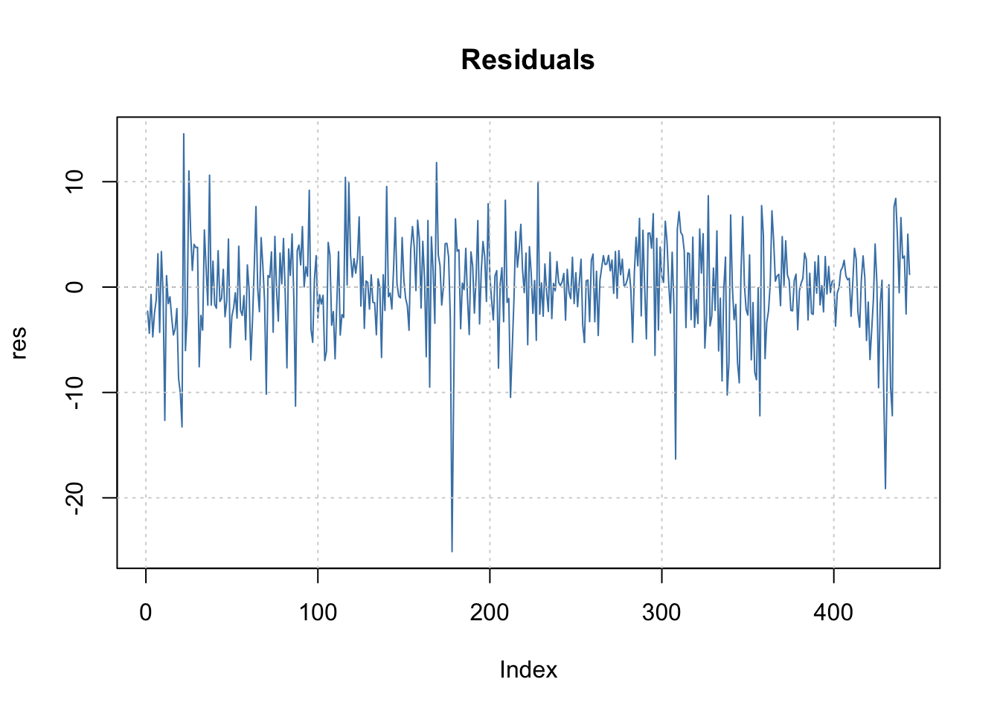
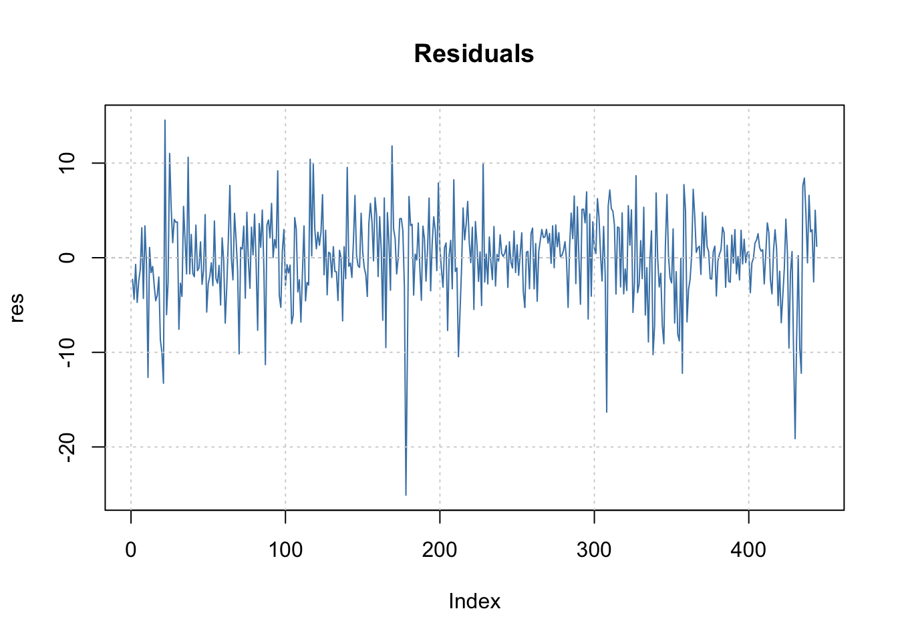
 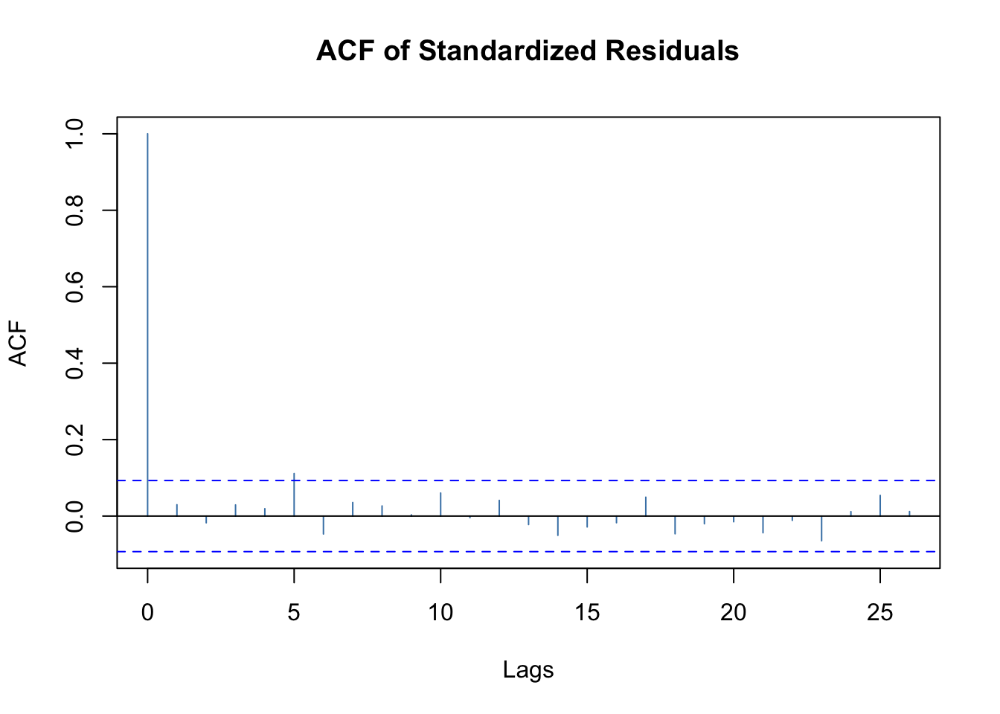
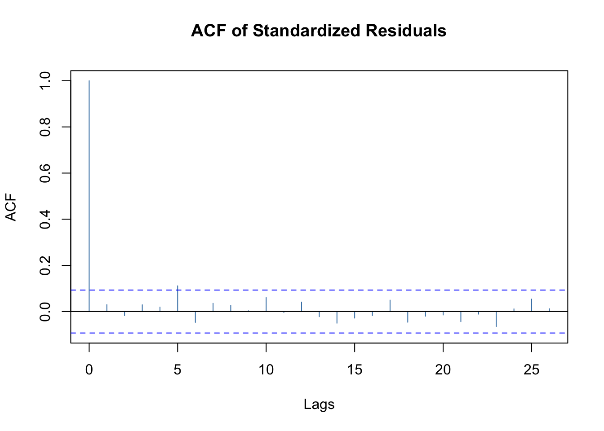 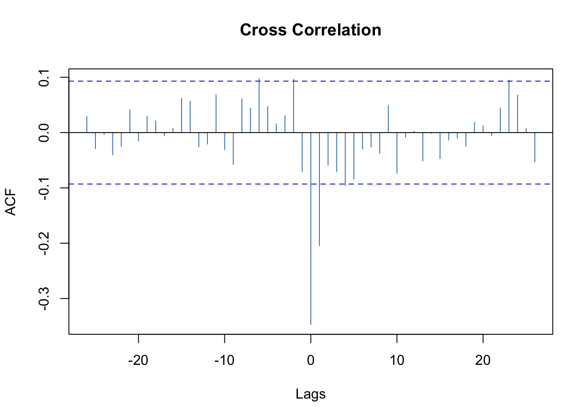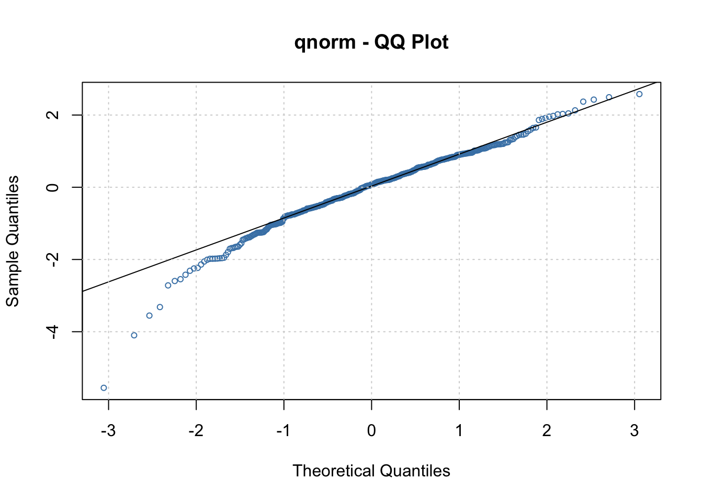
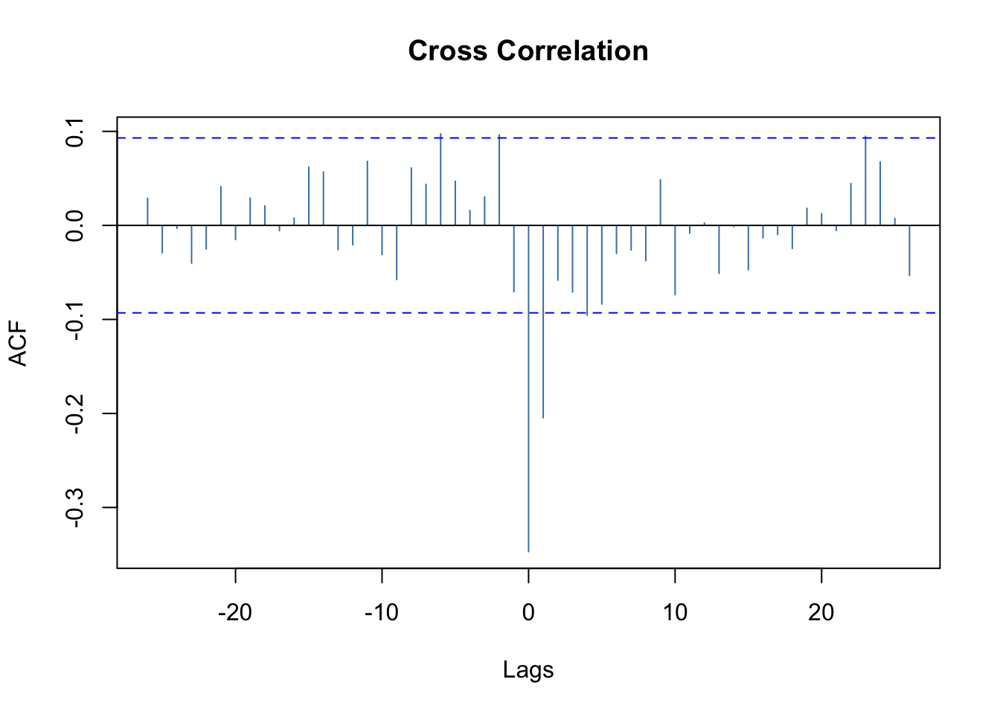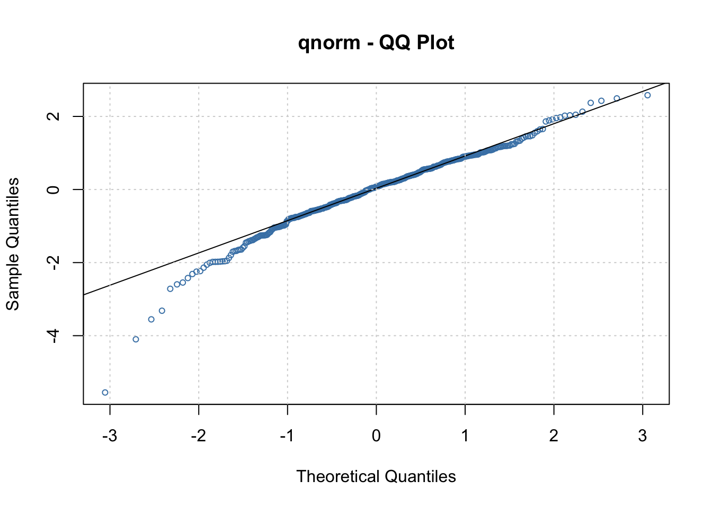
- –> モデル診断, 正規性を除き, データによく適合
garchM(sp5)
## Maximized log-likehood: -1289.449
##
## Coefficient(s):
## Estimate Std. Error t value Pr(>|t|)
## mu 0.3467741 0.3848943 0.90096 0.3676100
## gamma 0.0122469 0.0188778 0.64875 0.5165031
## omega 0.7612141 0.4796034 1.58717 0.1124732
## alpha 0.1163726 0.0317726 3.66267 0.0002496 ***
## beta 0.8581959 0.0308425 27.82515 < 2.22e-16 ***
## ---
## Signif. codes: 0 '***' 0.001 '**' 0.01 '*' 0.05 '.' 0.1 ' ' 1- –> リスクプレミアム (gamma), 有意でない (5%水準)
- –> GARCH(1,1)を選択せよ
Exponential GARCH Model
- Tsay 4.9, pp.218–220
Egarch(): Estimation of an EGARCH(1, 1) model. Assume normal innovations
- Egarch(rtn)# source("Egarch.R") # Compile R script
da <- read.table("m-ibmsp6709.txt", header = T) # Load data
dim(da) # Check sample size of the data
## [1] 516 3
ibm <- log(da$ibm + 1) # Take log transformation
Box.test(ibm, lag = 12, type = 'Ljung') # Check serial correlations
##
## Box-Ljung test
##
## data: ibm
## X-squared = 7.4042, df = 12, p-value = 0.8298
m1 <- Egarch(ibm) # Model fitting
##
## Estimation results of EGARCH(1,1) model:
## estimates: 0.006732389 -0.5983263 0.217603 -0.4243245 0.92015
## std.errors: 0.002877666 0.2349172 0.05916528 0.1683064 0.0388656
## t-ratio: 2.339531 -2.546967 3.677882 -2.521144 23.67518
names(m1)
## [1] "residuals" "volatility"- 上記出力の見方:
- Estimation results of EGARCH(1, 1) model:
- estimates: 0.006732389 -0.5983263 0.217603 -0.4243245 0.92015
- std.errors: 0.002877666 0.2349172 0.05916528 0.1683064 0.0388656
- t-ratio: 2.339531 -2.546967 3.677882 -2.521144 23.67518
- <– mu, omega, alpha1, gamma1, beta1の順に出力
- –> 値が教科書(p.220)と若干相違
- モデル診断
stresi <- m1$residuals/m1$volatility # Obtain standardized residuals
tdx <- c(1:516)/12 + 1967 # Compute time index
par(mfcol = c(2, 1)) # Plotting
plot(tdx, ibm, xlab = 'year', ylab = 'logrtn', type = 'l')
plot(tdx, stresi, xlab = 'year', ylab = 'stresi', type = 'l')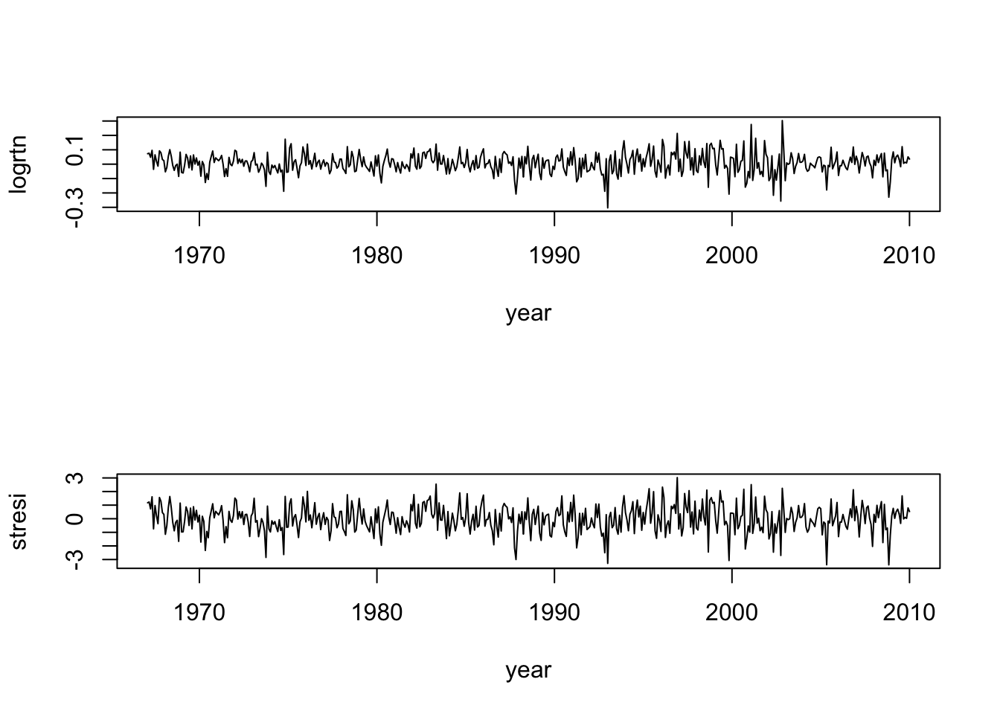
Box.test(stresi, lag = 10, type = 'Ljung') # Model checking
##
## Box-Ljung test
##
## data: stresi
## X-squared = 5.2866, df = 10, p-value = 0.8712
Box.test(stresi, lag = 20, type = 'Ljung')
##
## Box-Ljung test
##
## data: stresi
## X-squared = 20.983, df = 20, p-value = 0.3981
Box.test(stresi^2, lag = 10, type = 'Ljung')
##
## Box-Ljung test
##
## data: stresi^2
## X-squared = 5.0469, df = 10, p-value = 0.888
Box.test(stresi^2, lag = 20, type = 'Ljung')
##
## Box-Ljung test
##
## data: stresi^2
## X-squared = 14.261, df = 20, p-value = 0.817- –> Tsay, “The model fits the data reasonably well.”
Threshold GARCH モデル
- Tsay 4.10, pp.222–223
Tgarch(): Estimation of TGARCH(1, 1) model with Gaussian or Student-t innovations
- Tgarch11(x, cond.dist = "norm")da <- read.table("d-useu9910.txt", header = T) # daily USD/EUR, Jan/4/99--Aug/20/10
fx <- log(da$rate)
eu <- diff(fx) * 100
#
# source('Tgarch11.R')
m1 <- Tgarch11(eu)
## Log likelihood at MLEs:
## [1] -2731.832
##
## Coefficient(s):
## Estimate Std. Error t value Pr(>|t|)
## mu 0.012241535 0.010729902 1.14088 0.253920
## omega 0.001275041 0.000618464 2.06163 0.039243 *
## alpha 0.022347042 0.005249432 4.25704 2.0715e-05 ***
## gam1 0.012516447 0.007062540 1.77223 0.076356 .
## beta 0.968720385 0.004357859 222.29275 < 2.22e-16 ***
## ---
## Signif. codes: 0 '***' 0.001 '**' 0.01 '*' 0.05 '.' 0.1 ' ' 1- –> muは有意でない
- volatility方程式の係数は有意
- 特に, レバレッジ効果 (H0: gamma<=0, H1: gamma>0)は(片側) 5%で有意. t=1.772, p=0.038.
# モデル診断
names(m1)
## [1] "residuals" "volatility" "par"
at <- m1$residuals
sigt <- m1$volatility
resi <- at/sigt
Box.test(resi, lag = 10, type = 'Ljung')
##
## Box-Ljung test
##
## data: resi
## X-squared = 13.382, df = 10, p-value = 0.2031
Box.test(resi, lag = 20, type = 'Ljung')
##
## Box-Ljung test
##
## data: resi
## X-squared = 22.873, df = 20, p-value = 0.2951
Box.test(resi ^ 2, lag = 10, type = 'Ljung')
##
## Box-Ljung test
##
## data: resi^2
## X-squared = 12.893, df = 10, p-value = 0.2297
Box.test(resi ^ 2, lag = 20, type = 'Ljung')
##
## Box-Ljung test
##
## data: resi^2
## X-squared = 27.23, df = 20, p-value = 0.1289
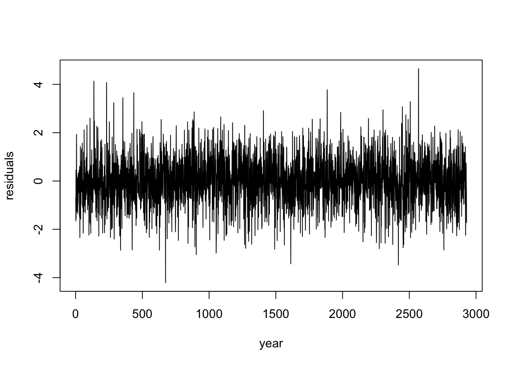
- → 残差プロット, heavy tailの存在?
Asymmetric Power ARCH モデル
- Tsay 4.11, pp.224–225
m1 <- fGarch::garchFit(~ 1 + aparch(1, 1), data = eu, trace = F)
summary(m1)
##
## Title:
## GARCH Modelling
##
## Call:
## fGarch::garchFit(formula = ~1 + aparch(1, 1), data = eu, trace = F)
##
## Mean and Variance Equation:
## data ~ 1 + aparch(1, 1)
## <environment: 0x7fb403cb1e10>
## [data = eu]
##
## Conditional Distribution:
## norm
##
## Coefficient(s):
## mu omega alpha1 gamma1 beta1 delta
## 0.0127648 0.0015919 0.0313679 0.1135340 0.9689156 1.6743133
##
## Std. Errors:
## based on Hessian
##
## Error Analysis:
## Estimate Std. Error t value Pr(>|t|)
## mu 0.0127648 0.0107626 1.186 0.2356
## omega 0.0015919 0.0007226 2.203 0.0276 *
## alpha1 0.0313679 0.0053350 5.880 4.11e-09 ***
## gamma1 0.1135340 0.0711910 1.595 0.1108
## beta1 0.9689156 0.0038405 252.292 < 2e-16 ***
## delta 1.6743133 0.4057134 4.127 3.68e-05 ***
## ---
## Signif. codes: 0 '***' 0.001 '**' 0.01 '*' 0.05 '.' 0.1 ' ' 1
##
## Log Likelihood:
## -2731.172 normalized: -0.9324587
##
## Description:
## Sun Feb 2 15:36:32 2025 by user:
##
##
## Standardised Residuals Tests:
## Statistic p-Value
## Jarque-Bera Test R Chi^2 50.2052325 1.253353e-11
## Shapiro-Wilk Test R W 0.9956711 1.608396e-07
## Ljung-Box Test R Q(10) 13.3768866 2.033562e-01
## Ljung-Box Test R Q(15) 20.1963422 1.645295e-01
## Ljung-Box Test R Q(20) 22.8473601 2.963515e-01
## Ljung-Box Test R^2 Q(10) 13.1560992 2.150747e-01
## Ljung-Box Test R^2 Q(15) 16.5800767 3.445805e-01
## Ljung-Box Test R^2 Q(20) 27.4488519 1.231016e-01
## LM Arch Test R TR^2 14.3573756 2.784714e-01
##
## Information Criterion Statistics:
## AIC BIC SIC HQIC
## 1.869014 1.881269 1.869006 1.873428
m1
##
## Title:
## GARCH Modelling
##
## Call:
## fGarch::garchFit(formula = ~1 + aparch(1, 1), data = eu, trace = F)
##
## Mean and Variance Equation:
## data ~ 1 + aparch(1, 1)
## <environment: 0x7fb403cb1e10>
## [data = eu]
##
## Conditional Distribution:
## norm
##
## Coefficient(s):
## mu omega alpha1 gamma1 beta1 delta
## 0.0127648 0.0015919 0.0313679 0.1135340 0.9689156 1.6743133
##
## Std. Errors:
## based on Hessian
##
## Error Analysis:
## Estimate Std. Error t value Pr(>|t|)
## mu 0.0127648 0.0107626 1.186 0.2356
## omega 0.0015919 0.0007226 2.203 0.0276 *
## alpha1 0.0313679 0.0053350 5.880 4.11e-09 ***
## gamma1 0.1135340 0.0711910 1.595 0.1108
## beta1 0.9689156 0.0038405 252.292 < 2e-16 ***
## delta 1.6743133 0.4057134 4.127 3.68e-05 ***
## ---
## Signif. codes: 0 '***' 0.001 '**' 0.01 '*' 0.05 '.' 0.1 ' ' 1
##
## Log Likelihood:
## -2731.172 normalized: -0.9324587
##
## Description:
## Sun Feb 2 15:36:32 2025 by user:| Estimate | Std. Error | t value | Pr(>|t|) | |
|---|---|---|---|---|
| mu | 0.0127648 | 0.0107626 | 1.186040 | 0.2356064 |
| omega | 0.0015919 | 0.0007226 | 2.203005 | 0.0275944 |
| alpha1 | 0.0313679 | 0.0053350 | 5.879659 | 0.0000000 |
| gamma1 | 0.1135340 | 0.0711910 | 1.594779 | 0.1107618 |
| beta1 | 0.9689156 | 0.0038405 | 252.291949 | 0.0000000 |
| delta | 1.6743133 | 0.4057134 | 4.126837 | 0.0000368 |
- –> モデル診断, データに良く適合.
- delta = 1.67の解釈難.
- –> delta = 2とは、有意に乖離していない(標準誤差0.406)
- –> delta = 2 (TGARCH(1, 1))でも良い?
m2 <- fGarch::garchFit(~ 1 + aparch(1, 1), data = eu, delta = 2, include.delta = F, trace = F)
summary(m2)
##
## Title:
## GARCH Modelling
##
## Call:
## fGarch::garchFit(formula = ~1 + aparch(1, 1), data = eu, delta = 2,
## include.delta = F, trace = F)
##
## Mean and Variance Equation:
## data ~ 1 + aparch(1, 1)
## <environment: 0x7fb403b404e8>
## [data = eu]
##
## Conditional Distribution:
## norm
##
## Coefficient(s):
## mu omega alpha1 gamma1 beta1
## 0.0122646 0.0012745 0.0282723 0.1100243 0.9687115
##
## Std. Errors:
## based on Hessian
##
## Error Analysis:
## Estimate Std. Error t value Pr(>|t|)
## mu 0.0122646 0.0107289 1.143 0.2530
## omega 0.0012745 0.0005752 2.216 0.0267 *
## alpha1 0.0282723 0.0038637 7.317 2.53e-13 ***
## gamma1 0.1100243 0.0649051 1.695 0.0900 .
## beta1 0.9687115 0.0039421 245.735 < 2e-16 ***
## ---
## Signif. codes: 0 '***' 0.001 '**' 0.01 '*' 0.05 '.' 0.1 ' ' 1
##
## Log Likelihood:
## -2731.85 normalized: -0.9326902
##
## Description:
## Sun Feb 2 15:36:32 2025 by user:
##
##
## Standardised Residuals Tests:
## Statistic p-Value
## Jarque-Bera Test R Chi^2 49.9767578 1.405032e-11
## Shapiro-Wilk Test R W 0.9956803 1.655882e-07
## Ljung-Box Test R Q(10) 13.3828472 2.030469e-01
## Ljung-Box Test R Q(15) 20.2983334 1.607845e-01
## Ljung-Box Test R Q(20) 22.8726510 2.950908e-01
## Ljung-Box Test R^2 Q(10) 12.8958521 2.295533e-01
## Ljung-Box Test R^2 Q(15) 16.5528786 3.462878e-01
## Ljung-Box Test R^2 Q(20) 27.2403595 1.286361e-01
## LM Arch Test R TR^2 14.2966096 2.821698e-01
##
## Information Criterion Statistics:
## AIC BIC SIC HQIC
## 1.868795 1.879007 1.868789 1.872472
plot(m2, which = 1:13)


 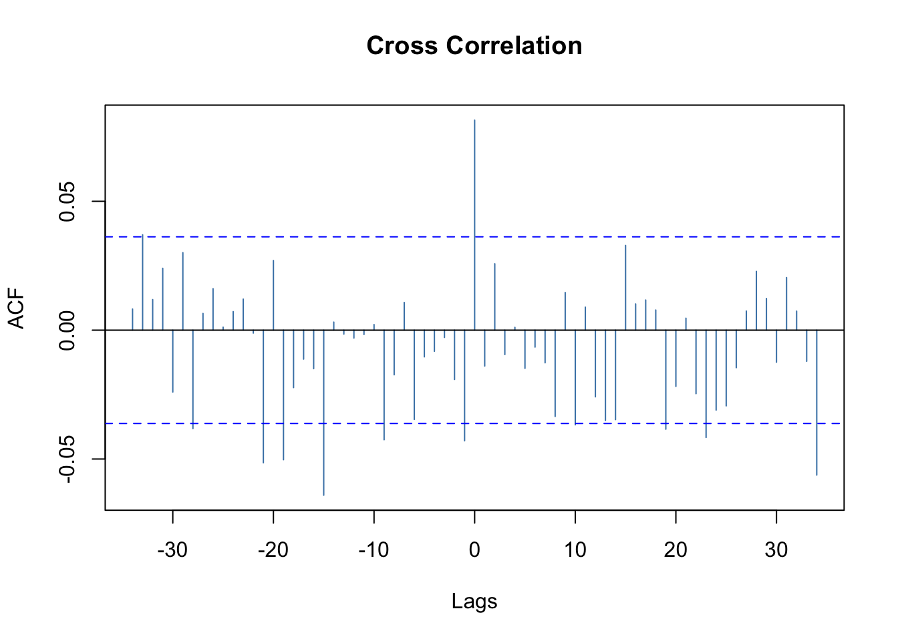
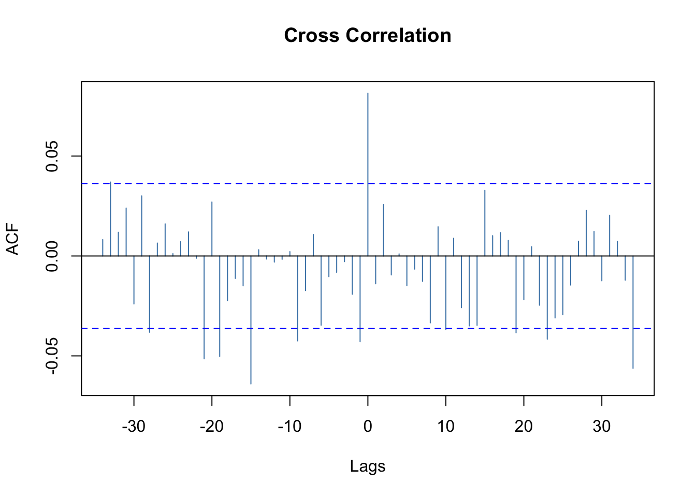 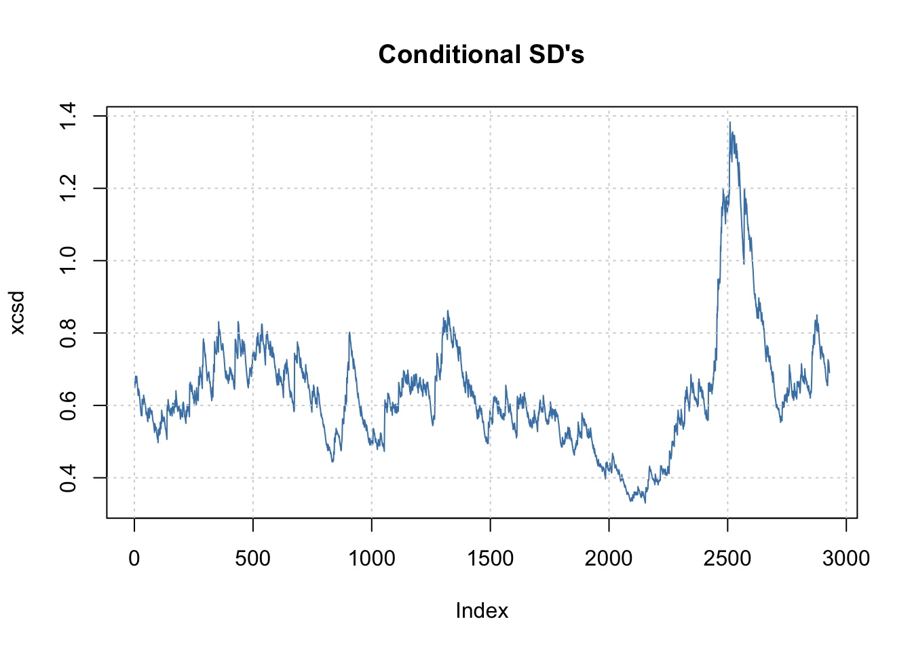
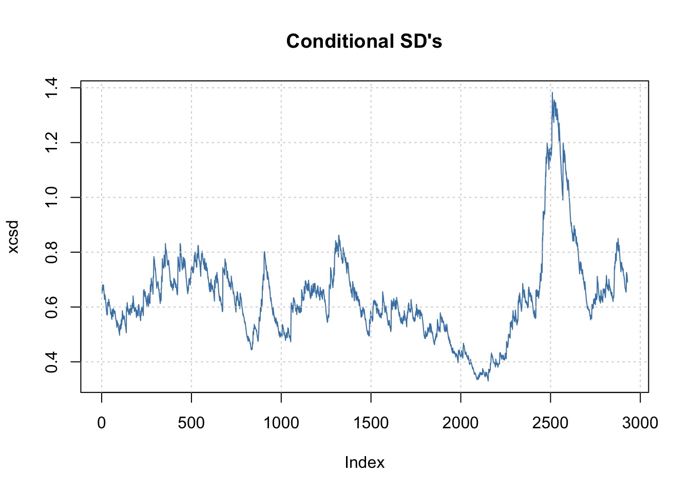


m2
##
## Title:
## GARCH Modelling
##
## Call:
## fGarch::garchFit(formula = ~1 + aparch(1, 1), data = eu, delta = 2,
## include.delta = F, trace = F)
##
## Mean and Variance Equation:
## data ~ 1 + aparch(1, 1)
## <environment: 0x7fb403b404e8>
## [data = eu]
##
## Conditional Distribution:
## norm
##
## Coefficient(s):
## mu omega alpha1 gamma1 beta1
## 0.0122646 0.0012745 0.0282723 0.1100243 0.9687115
##
## Std. Errors:
## based on Hessian
##
## Error Analysis:
## Estimate Std. Error t value Pr(>|t|)
## mu 0.0122646 0.0107289 1.143 0.2530
## omega 0.0012745 0.0005752 2.216 0.0267 *
## alpha1 0.0282723 0.0038637 7.317 2.53e-13 ***
## gamma1 0.1100243 0.0649051 1.695 0.0900 .
## beta1 0.9687115 0.0039421 245.735 < 2e-16 ***
## ---
## Signif. codes: 0 '***' 0.001 '**' 0.01 '*' 0.05 '.' 0.1 ' ' 1
##
## Log Likelihood:
## -2731.85 normalized: -0.9326902
##
## Description:
## Sun Feb 2 15:36:32 2025 by user:| Estimate | Std. Error | t value | Pr(>|t|) | |
|---|---|---|---|---|
| mu | 0.0122646 | 0.0107289 | 1.143135 | 0.2529826 |
| omega | 0.0012745 | 0.0005752 | 2.215693 | 0.0267125 |
| alpha1 | 0.0282723 | 0.0038637 | 7.317482 | 0.0000000 |
| gamma1 | 0.1100243 | 0.0649051 | 1.695156 | 0.0900458 |
| beta1 | 0.9687115 | 0.0039421 | 245.735451 | 0.0000000 |
- –> m1と結果類似
Nonsymmetric GARCH モデル
- Tsay 4.12, pp.227–228
Ngarch(): Estimation of a non-symmertic GARCH, NGARCH(1, 1), model.
- Assume normal innovations
- Ngarch(rtn)da <- read.table("d-useu9910.txt", header = T)
fx <- log(da$rate)
eu <- diff(fx) * 100
#
source("Ngarch.R")
m1 <- Ngarch(eu)
##
## Estimation results of NGARCH(1,1) model:
## estimates: -0.001094043 0.002366721 0.9618047 0.02118565 0.7309616
## std.errors: 0.01080893 0.000580552 0.006045803 0.003604727 0.2501548
## t-ratio: -0.1012166 4.076674 159.0863 5.877186 2.922037
res <- m1$residuals
vol <- m1$volatility
resi <- res / vol
Box.test(resi, lag = 10, type = 'Ljung')
##
## Box-Ljung test
##
## data: resi
## X-squared = 14.776, df = 10, p-value = 0.1404
Box.test(resi^2, lag = 10, type = 'Ljung')
##
## Box-Ljung test
##
## data: resi^2
## X-squared = 12.943, df = 10, p-value = 0.2269
# Estimation results of NGARCH(1, 1) model:
# estimates: -0.001094043 0.002366721 0.9618047 0.02118565 0.7309616
# std.errors: 0.01080893 0.000580552 0.006045803 0.003604727 0.2501548
# t-ratio: -0.1012166 4.076674 159.0863 5.877186 2.922037
# <-- mu, beta0, beta1, beta2, thetaの順- –> muを除いて(5%)有意
- 特に, レバレッジ効果(theta), t=2.92で(5%)有意
- –> 上記TGARCH(1, 1)の結果と同様


- → 両モデルは, 類似のvolatility推定値
代替的アプリーチ間の比較
- Tsay 4.15.1, pp.234–235
(日次データから)月次ボラティリティの推定
- “ルートT・ルール”の適用
- 方法1: 日次対数収益率使用 (white noiseを仮定)
# source("vold2m.R") ## Compile the script
m1 <- vold2m(x)
names(m1)
## [1] "volatility" "ndays"
v1 <- m1$volatility
cnt <- m1$ndays
cnt[1:5]
## [1] 20 20 21 21 21- 方法2: 日次対数収益率使用 (MA過程を仮定)
月次データの使用
- 方法3: GARCH(1,1)を月次対数収益率に適用
# library(fGarch)
m3 <- fGarch::garchFit(~ 1 + garch(1, 1), data = sp5, trace = F)
summary(m3)
##
## Title:
## GARCH Modelling
##
## Call:
## fGarch::garchFit(formula = ~1 + garch(1, 1), data = sp5, trace = F)
##
## Mean and Variance Equation:
## data ~ 1 + garch(1, 1)
## <environment: 0x7fb4018bb668>
## [data = sp5]
##
## Conditional Distribution:
## norm
##
## Coefficient(s):
## mu omega alpha1 beta1
## 5.3471e-03 9.3263e-05 1.1422e-01 8.4864e-01
##
## Std. Errors:
## based on Hessian
##
## Error Analysis:
## Estimate Std. Error t value Pr(>|t|)
## mu 5.347e-03 1.742e-03 3.069 0.002149 **
## omega 9.326e-05 4.859e-05 1.919 0.054942 .
## alpha1 1.142e-01 3.003e-02 3.804 0.000142 ***
## beta1 8.486e-01 3.186e-02 26.634 < 2e-16 ***
## ---
## Signif. codes: 0 '***' 0.001 '**' 0.01 '*' 0.05 '.' 0.1 ' ' 1
##
## Log Likelihood:
## 899.7817 normalized: 1.717141
##
## Description:
## Sun Feb 2 15:36:53 2025 by user:
##
##
## Standardised Residuals Tests:
## Statistic p-Value
## Jarque-Bera Test R Chi^2 172.5211020 0.000000e+00
## Shapiro-Wilk Test R W 0.9690782 4.639274e-09
## Ljung-Box Test R Q(10) 11.1732915 3.441774e-01
## Ljung-Box Test R Q(15) 15.4509983 4.194449e-01
## Ljung-Box Test R Q(20) 17.5646909 6.160600e-01
## Ljung-Box Test R^2 Q(10) 5.4667953 8.578981e-01
## Ljung-Box Test R^2 Q(15) 7.0315432 9.567685e-01
## Ljung-Box Test R^2 Q(20) 8.2004251 9.904566e-01
## LM Arch Test R TR^2 5.6298797 9.335791e-01
##
## Information Criterion Statistics:
## AIC BIC SIC HQIC
## -3.419014 -3.386484 -3.419129 -3.406275
v3 <- fGarch::volatility(m3)
v3 <- v3[158:524]| Estimate | Std. Error | t value | Pr(>|t|) | |
|---|---|---|---|---|
| mu | 0.0053471 | 0.0017424 | 3.068779 | 0.0021494 |
| omega | 0.0000933 | 0.0000486 | 1.919333 | 0.0549423 |
| alpha1 | 0.1142231 | 0.0300281 | 3.803878 | 0.0001424 |
| beta1 | 0.8486414 | 0.0318635 | 26.633651 | 0.0000000 |
- 3つの方法の比較
v1 <- ts(v1, frequency = 12, start = c(1980, 1))
v2 <- ts(v2, frequency = 12, start = c(1980, 1))
v3 <- ts(v3, frequency = 12, start = c(1980, 1))
max(v1, v2, v3)
## [1] 0.2870294
#
# par(mfcol=c(3,1))
# plot(v1, xlab='year', ylab='vol', type='l', ylim=c(0,.3))
# title(main='(a) No correlations')
# plot(v2, xlab='year', ylab='vol', type='l', ylim=c(0,.3))
# title(main='(b) Lag-1 correlation')
# plot(v3, xlab='year', ylab='vol', type='l', ylim=c(0,.3))
# title(main='(c) GARCH(1,1)')
plot(ts.intersect(v1, v2, v3))